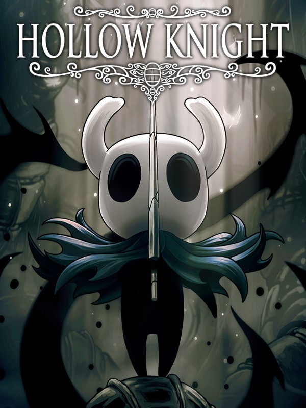

Hollow Knight
Detalhes
 |
|
| Tempo de jogo | 20h 8m 14s |
| Última Atividade | 26/03/2026 11:54:04 |
| Adicionado | 18/10/2025 9:28:34 |
| Modificado | 22/11/2025 11:01:34 |
| Status de Conclusão | Jogado |
| Biblioteca | Gog |
| Fonte | GOG |
| Plataforma | PC (Windows) |
| Data de Lançamento | 24/02/2017 |
| Pontuação da Comunidade | 92 |
| Avaliação da crítica | 91 |
| Pontuação do Usuário | |
| Gênero | Adventure Indie Platform |
| Desenvolvedor | Team Cherry |
| Editor | Team Cherry |
| Funções | Single Player |
| Links | Uknown Uknown Uknown Uknown Uknown Uknown Uknown Uknown Uknown Uknown Uknown Uknown Uknown |
| Tag | [EMT] Video Micro missing [EMT] Video missing [Ludusavi] Backed up |
Descrição
Hollow Knight se Expande com Conteúdo Gratuito
 Godmaster - Assuma seu lugar entre os Deuses. Novos Personagens e Missão. Novas Lutas contra Chefes. Novo Modo de Jogo. Glorificar Amuletos. Disponível agora!
Godmaster - Assuma seu lugar entre os Deuses. Novos Personagens e Missão. Novas Lutas contra Chefes. Novo Modo de Jogo. Glorificar Amuletos. Disponível agora!
 Lifeblood - Um Reino Atualizado! Novo Chefe. Chefes Atualizados. Ajustes e Refinamentos em todo o jogo.
Lifeblood - Um Reino Atualizado! Novo Chefe. Chefes Atualizados. Ajustes e Refinamentos em todo o jogo.
 The Grimm Troupe - Acenda a Lanterna do Pesadelo. Convoque a Trupe. Nova Missão Principal. Novas Lutas contra Chefes. Novos Amuletos. Novos Inimigos. Novos Amigos.
The Grimm Troupe - Acenda a Lanterna do Pesadelo. Convoque a Trupe. Nova Missão Principal. Novas Lutas contra Chefes. Novos Amuletos. Novos Inimigos. Novos Amigos.
 Hidden Dreams - Novos inimigos poderosos emergem! Novas lutas contra Chefes. Novas Atualizações. Nova Música.
Hidden Dreams - Novos inimigos poderosos emergem! Novas lutas contra Chefes. Novas Atualizações. Nova Música.
Desbrave as Profundezas de um Reino Esquecido
Abaixo da decadente cidade de Dirtmouth, adormece um antigo reino em ruínas. Muitos são atraídos para baixo da superfície, em busca de riquezas, glória, ou respostas para segredos antigos. Hollow Knight é uma aventura de ação 2D de estilo clássico através de um vasto mundo interconectado. Explore cavernas sinuosas, cidades antigas e ermos mortais; lute contra criaturas corrompidas e faça amizade com insetos bizarros; e resolva mistérios antigos no coração do reino.
- Ação clássica de rolagem lateral, com todos os adereços modernos.
- Controles 2D afinados. Esquive, avance e ataque para abrir caminho até mesmo contra os adversários mais mortais.
- Explore um vasto mundo interconectado de estradas esquecidas, matagais e cidades em ruínas.
- Forje seu próprio caminho! O mundo de Hallownest é expansivo e aberto. Escolha quais caminhos você toma, quais inimigos você enfrenta e encontre seu próprio caminho.
- Evolua com novas habilidades e poderes poderosos! Ganhe feitiços, força e velocidade. Salte para novas alturas com asas etéreas. Avance em um flash flamejante. Destrua inimigos com a Alma Ardente!
- Equipe Amuletos! Relíquias antigas que oferecem novos poderes e habilidades bizarras. Escolha seus favoritos e torne sua jornada única!
- Um enorme elenco de personagens fofos e assustadores, todos trazidos à vida com animação 2D tradicional quadro a quadro.
- Mais de 130 inimigos! 30 chefes épicos! Enfrente feras ferozes e derrote cavaleiros antigos em sua jornada pelo reino. Rastreie cada inimigo distorcido e adicione-os ao seu Diário do Caçador!
- Mergulhe nas mentes com o Ferrão dos Sonhos. Descubra um lado totalmente diferente dos personagens que você encontra e dos inimigos que você enfrenta.
- Belas paisagens pintadas, com paralaxe extravagante, dão uma sensação única de profundidade a um mundo de visão lateral.
- Mapeie sua jornada com extensas ferramentas de mapeamento. Compre bússolas, penas, mapas e pinos para melhorar sua compreensão das muitas paisagens sinuosas de Hollow Knight.
- Uma trilha sonora assombrosa e intimista acompanha o jogador em sua jornada, composta por Christopher Larkin. A trilha sonora ecoa a majestade e a tristeza de uma civilização levada à ruína.
- Complete Hollow Knight para desbloquear o Modo Alma de Aço, o desafio supremo!


Um Mundo Evocativo Feito à Mão
O mundo de Hollow Knight é trazido à vida em detalhes vívidos e sombrios, suas cavernas vivas com criaturas bizarras e aterrorizantes, cada uma animada à mão em um estilo 2D tradicional. Cada nova área que você descobrir é lindamente única e estranha, repleta de novas criaturas e personagens. Aprecie as vistas e descubra novas maravilhas escondidas fora do caminho principal. Se você gosta de jogabilidade clássica, personagens fofos mas assustadores, aventura épica e mundos belos e góticos, então Hollow Knight espera por você!